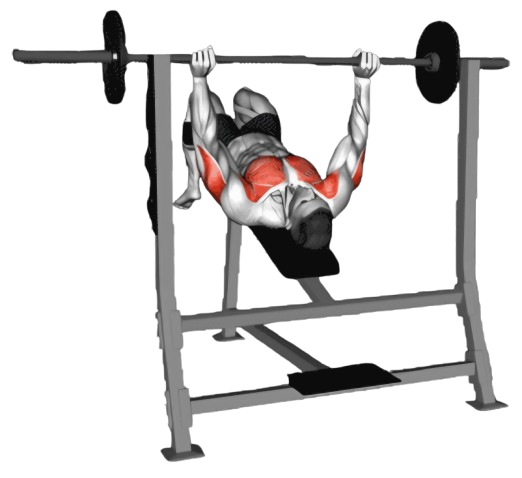
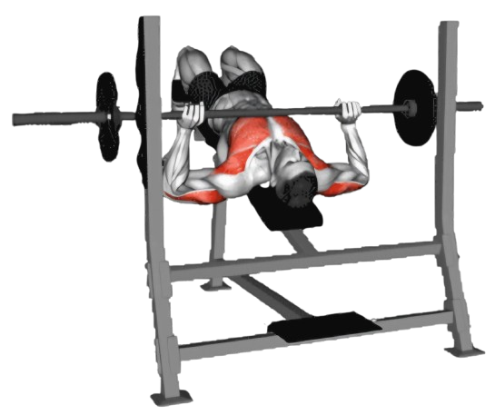

디클라인 프레스

- 디클라인 벤치를 약 15도에서 30도 정도로 아래로 기울인다. 발걸이에 발을 고정해 몸이 벤치에서 미끄러지지 않도록 한다.
- 바벨이 가슴 아래쪽(명치 부근)에 오도록 손을 어깨 너비보다 약간 넓게 잡는다. 손의 간격은 자신이 편안하게 느껴지는 위치로 조절한다.
- 바벨을 들어 팔을 펴고, 바벨을 가슴 아래쪽으로 위치시킨다. 이때 바벨이 명치와 약간 아래쪽 사이에 오도록 한다.
- 이때 호흡은 뱉는다.
- 바벨을 가슴 쪽으로 내린다. 팔꿈치를 몸통 옆으로 자연스럽게 내리며, 바벨이 가슴 하부에 닿도록 한다.
- 바벨이 가슴에 살짝 닿으면, 숨을 내쉬면서 팔을 밀어 올려 시작 위치로 돌아온다.
- 이때 호흡은 마신다.

주의사항
- 운동 중 어깨와 손목이 과도하게 움직이지 않도록 주의한다.
- 손목이 꺾이지 않도록 주의하고, 바벨을 손바닥 중심에 잡는다. 손목이 뒤로 젖혀지면 부상의 위험이 있다.
- 지나치게 무거운 중량은 잘못된 자세를 유발할 수 있어 부상의 원인이 된다.
운동부위 및 효과
- 상부 대흉근, 삼두근, 삼각근 전면부, 코어근육
- 일반 벤치프레스와 인클라인 벤치프레스에서 부족했던 가슴 하부를 보완해준다.
- 팔과 어깨의 근력도 함께 발달시키며, 상체 전반적인 힘을 기르는 데 효과적이다.